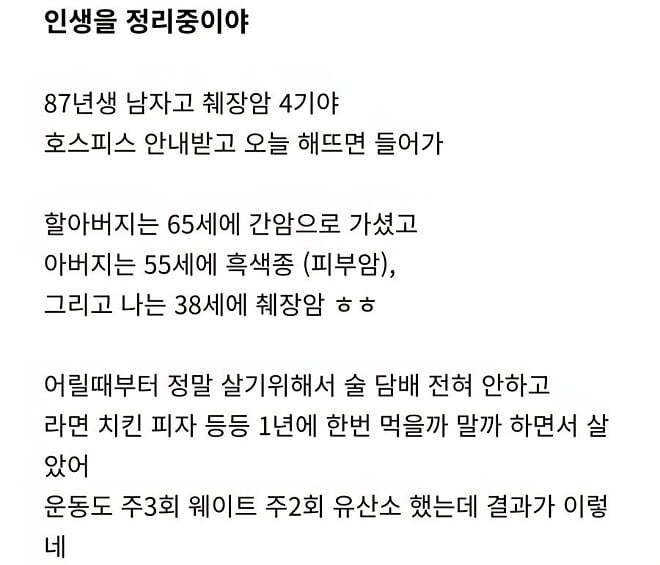
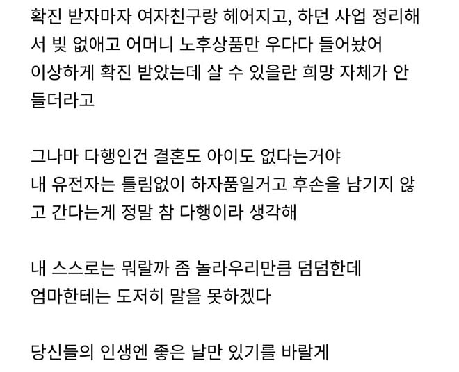
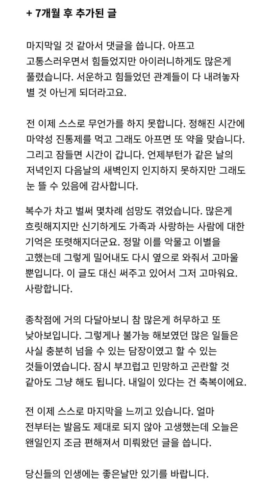

ㅠㅠ



ㅠㅠ
너도 힘내.. 화이팅 하자
담담해서 더 슬프다
힘든시기가 지나고 부디 평안을 얻기를…
암이 어서 하루빨리 정복되었으면 좋겠다
아프면 잘살려고 발버둥치던거 허무해하더라
죽음도 받아들이는듯 행동함
심장 스탠스로 운좋게 살아나신분이 현타 쎄게 오신듯했음
근대 건강해지시니까 다시 원래대로 돌아옴
그런거보면 건강이 1순위임
건강이있어야 가족도 돈도 있는거지
자기가 죽으면 아무소용없음
열심히 사는 개붕이들도 싸우지말고 살자
가장 마지막에 있는 당신이 나를 위로해주었습니다. 부디 평안하기를 바랍니다.
빨리 암과 치매는 정복되었으면좋겠다
세상에 당연한 건 없다...
이런 억까가 있나..
1년에 한번하는 건강검진으로 초기 발견 가능? 저런거 발견 못하면 건강검진 받는 의미가 없는디
몇몇 암은 단순건강검진으로 안나옴 저 글에 췌장암 경우엔 ct로도 안나오는 경우가 있음
나도 저렇게 받아들일 수 있을까
저 글을 쓰면서 얼마나 슬펐을까...
나는 뇌와 신장 유전병으로 아버지쪽 어른들이
아버지 포함해서 40중후반에 발병해서 투병하면서 5,60대에 다 돌아가심...
나도 발현될 가능성이 높아서, 100세 시대라고 떠드는데 내가 제대로 나답게 살 수 있는 시간이 고작 10여년 밖에 남지않았다는 생각이 들때마다 암담하고 세상 모든게 무가치해보였음
근데 타임어택이라 생각하고 내가 해보고 싶었던 것들을 일단 젊을 때 다 해보려고 요 몇년은 미루거나 망설이던 것들을 하나씩 해보고 있음.
사는 동안 잘 발버둥쳐야겠다 싶더라 아버지 아프시면서 느끼는 게.. ... 참 어렵다. 어려워.
살아있고 건강함에 감사한다 잘가시우...
비소세포셔? 그럼 너무 좋겠다. 우린 4긴데.. 부비동 소세포암이라. 난리였다 진짜. 4월30일에 진단 받고..
수술 안되서 항암 중인데, 폐암 뒤져보면 알겠지만 소세포암의 특성이 있어서. 우리 위치도 무서워갖고.. 이게 뭔..
약 자알~ 받고, 내성 안오고 신약들 빨리 나오기만 기도 중이지.
애효 이게 뭐야. 남의 일인 줄들로만 알았는데. 진짜 집안이 망가졌다.
기운 잘 유지해 솔직히 너무 힘들다.